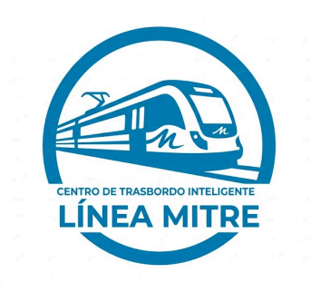

MAPA DE RED
Vista interactiva del Ramal Retiro - Tigre y conexiones de subte.
Mapa de estaciones Línea C


Vista interactiva del Ramal Retiro - Tigre y conexiones de subte.
Mapa de estaciones Línea C